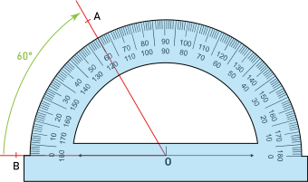
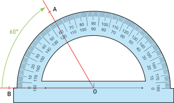
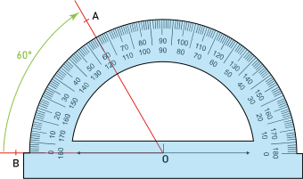

| F3 | - Mesurer un angle |
Lorsque l'on souhaite mesure un angle, on place le centre du rapporteur sur le sommet de l'angle ; On aligne l'un des 0° avec l'un des côté de l'angle et on mesure à partir de la position de la seconde demi-droite.

En fonction du 0° choisi, la mesure de l'angle se mesure avec les graduation à l'intérieur ou à l'extérieur du rapporteur.